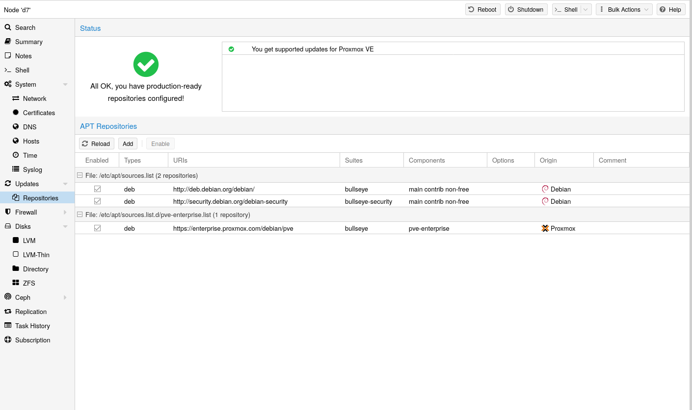

Proxmox VE uses APT as its package management tool like any other Debian-based system.
Proxmox VE automatically checks for package updates on a daily basis. The root@pam
user is notified via email about available updates. From the GUI, the
Changelog button can be used to see more details about an selected update.
Repositories are a collection of software packages, they can be used to install new software, but are also important to get new updates.
You need valid Debian and Proxmox repositories to get the latest security updates, bug fixes and new features.
APT Repositories are defined in the file /etc/apt/sources.list in the legacy
single-line format and in .sources files placed in /etc/apt/sources.list.d/
for the modern deb822 multi-line format, see
Repository Formats for details.

Since Proxmox VE 7, you can check the repository state in the web interface. The node summary panel shows a high level status overview, while the separate Repository panel shows in-depth status and list of all configured repositories.
Basic repository management, for example, activating or deactivating a repository, is also supported.
The available packages from a repository are acquired by running apt update.
Updates can be installed directly using apt, or via the GUI (Node → Updates).
Package repositories can be configured in the source list /etc/apt/sources.list and the files contained in /etc/apt/sources.list.d/.
There are two formats supported:
sources.list file, each line defines a package repository.
Empty lines are ignored. A # character anywhere on a line marks the remainder
of that line as a comment.
This is the legacy format. Since Debian 13 Trixie apt will complain about using
this format. You can automatically migrate most repositories using the apt
modernize-sources command.
repo.sources file each entry consists of multiple
lines of key-value pairs. A file can include multiple entries by separating each
group with a blank line. This is the modern format.
File /etc/apt/sources.list.d/debian.sources.
Types: deb deb-src URIs: http://deb.debian.org/debian/ Suites: trixie trixie-updates Components: main non-free-firmware Signed-By: /usr/share/keyrings/debian-archive-keyring.gpg Types: deb deb-src URIs: http://security.debian.org/debian-security/ Suites: trixie-security Components: main non-free-firmware Signed-By: /usr/share/keyrings/debian-archive-keyring.gpg
This is the recommended repository and available for all Proxmox VE subscription
users. It contains the most stable packages and is suitable for production use.
The pve-enterprise repository is enabled by default:
File /etc/apt/sources.list.d/pve-enterprise.sources.
Types: deb URIs: https://enterprise.proxmox.com/debian/pve Suites: trixie Components: pve-enterprise Signed-By: /usr/share/keyrings/proxmox-archive-keyring.gpg
Please note that you need a valid subscription key to access the
pve-enterprise repository. We offer different support levels, which you can
find further details about at https://proxmox.com/en/proxmox-virtual-environment/pricing.
You can disable this repository by adding an Enabled: no line to the
relevant entry in the file. This will prevent error messages if your host does
not have a subscription key. In that case, please configure the
pve-no-subscription repository.
As the name suggests, you do not need a subscription key to access this repository. It can be used for testing and non-production use. It’s not recommended to use this on production servers, as these packages are not always as heavily tested and validated.
We recommend to configure this repository in
/etc/apt/sources.list.d/proxmox.sources.
File /etc/apt/sources.list.d/proxmox.sources.
Types: deb URIs: http://download.proxmox.com/debian/pve Suites: trixie Components: pve-no-subscription Signed-By: /usr/share/keyrings/proxmox-archive-keyring.gpg
Remember that you will always need the base Debian repositories in addition to a Proxmox VE Proxmox repository.
This repository contains the latest packages and is primarily used by developers
to test new features. To configure it, add the following stanza to the file
/etc/apt/sources.list.d/proxmox.sources:
File /etc/apt/sources.list.d/proxmox.sources.
Types: deb URIs: http://download.proxmox.com/debian/pve Suites: trixie Components: pve-test Signed-By: /usr/share/keyrings/proxmox-archive-keyring.gpg
The pve-test repository should (as the name implies) only be used for
testing new features or bug fixes.
Ceph-related packages are kept up to date with a preconfigured Ceph enterprise repository. Preinstalled packages enable connecting to an external Ceph cluster and adding its RBD or CephFS pools as storage. You can also build a hyper-converged infrastructure (HCI) by running Ceph on top of the Proxmox VE cluster.
Information from this chapter is helpful in the following cases:
ceph --version and
disable the old Ceph repository.
Ceph releases available in Proxmox VE 9. To read the latest version of the admin guide for your Proxmox VE release, make sure that all system updates are installed and that this page has been reloaded.
|
|
| ||
| 2026-09 (v19.2) | recommended | available | available |
Ceph repositories for Proxmox VE 9. The content of the ceph.sources file below serves as a reference (prior to
Proxmox VE 9 the file ceph.list was used). To make changes, please follow the case
that applies to your situation as described at the beginning of this
subchapter. If you have disabled a repository in the web UI and also want to
delist it, you can manually remove the corresponding entry from the file.
enterprise
This repository is recommended for production use and contains the most stable package versions. It is accessible if the Proxmox VE node has a valid subscription of any level. For details and included customer support levels visit:
https://proxmox.com/en/proxmox-virtual-environment/pricing
File /etc/apt/sources.list.d/ceph.sources.
Types: deb URIs: https://enterprise.proxmox.com/debian/ceph-squid Suites: trixie Components: enterprise Signed-By: /usr/share/keyrings/proxmox-archive-keyring.gpg
no-subscription
This repository is suitable for testing and for non-production use. It is freely accessible and does not require a valid subscription. After some time, its package versions are also made available in the enterprise repository.
File /etc/apt/sources.list.d/ceph.sources.
Types: deb URIs: http://download.proxmox.com/debian/ceph-squid Suites: trixie Components: no-subscription Signed-By: /usr/share/keyrings/proxmox-archive-keyring.gpg
test
This repository contains the latest package versions and is primarily used by developers to test new features and bug fixes.
File /etc/apt/sources.list.d/ceph.sources.
Types: deb URIs: http://download.proxmox.com/debian/ceph-squid Suites: trixie Components: test Signed-By: /usr/share/keyrings/proxmox-archive-keyring.gpg
The Ceph test repository should (as the name implies) only be
used for testing new features or bug fixes.
Starting with Debian Bookworm (Proxmox VE 8) non-free firmware (as defined by
DFSG) has been moved to the
newly created Debian repository component non-free-firmware.
Since Proxmox VE 9 this repository is enabled by default for new installations to ensure they can get Early OS Microcode Updates.
You can also acquire need additional
Runtime Firmware Files not already
included in the pre-installed package pve-firmware.
To be able to install packages from this component, run
editor /etc/apt/sources.list, append non-free-firmware to the end of each
.debian.org repository line and run apt update.
If you upgraded your Proxmox VE 9 install from a previous version of Proxmox VE and have
modernized your package repositories to the new deb822-style, you will need to
adapt /etc/apt/sources.list.d/debian.sources instead. Run editor
/etc/apt/sources.list.d/debian.sources and add non-free-firmware to the lines
starting with Components: of each stanza.
Modernizing your package repositories is recommended. Otherwise, apt on
Debian Trixie will complain. You can run apt modernize-sources to do so.
The Release files in the repositories are signed with GnuPG. APT is using these signatures to verify that all packages are from a trusted source.
If you install Proxmox VE from an official ISO image, the key for verification is already installed.
If you install Proxmox VE on top of Debian, download and install the key with the following commands:
# wget https://enterprise.proxmox.com/debian/proxmox-archive-keyring-trixie.gpg -O /usr/share/keyrings/proxmox-archive-keyring.gpg
The wget command above adds the keyring for Proxmox releases based on
Debian Trixie. Once the proxmox-archive-keyring package is installed, it will
manage this file. At that point, the hashes below may no longer match the hashes
of this file, as keys for new Proxmox releases get added or removed. This is
intended, apt will ensure that only trusted keys are being used.
Modifying this file is discouraged once proxmox-archive-keyring is installed.
Verify the checksum afterwards with the sha512sum CLI tool:
# sha256sum /usr/share/keyrings/proxmox-archive-keyring.gpg 136673be77aba35dcce385b28737689ad64fd785a797e57897589aed08db6e45 /usr/share/keyrings/proxmox-archive-keyring.gpg
or the md5sum CLI tool:
# md5sum /usr/share/keyrings/proxmox-archive-keyring.gpg 77c8b1166d15ce8350102ab1bca2fcbf /usr/share/keyrings/proxmox-archive-keyring.gpg
Make sure the path you install the key to matches the Signed-By: lines
in your repository stanzas.